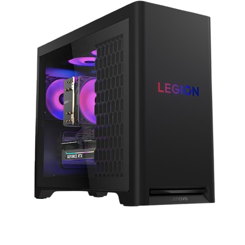

sonicgaming_pcs
Erazer x700
OneKey Overclocking with a liquid cooling system, tool-free expandability via hot-swap drive bays, and support for dual graphics cards.
Erazer x700
OneKey Overclocking: This exclusive feature allows users to increase processor performance with a single button press, managing overclocking through the Erazer Control Center software rather than requiring complex BIOS adjustments.Tool-Free Expandability: The chassis is designed for easy upgrades, featuring two hot-swap external drive bays that allow for additional storage (up to 4TB total) to be plugged in without powering down the PC.
Dual Graphics Support: The system can be configured with dual graphics cards (NVIDIA SLI or AMD CrossFireX) to enhance gaming visuals and performance.Multi-Display Technology: Depending on the graphics card configuration, the X700 supports multiple displays, with some models supporting up to six monitors using AMD Eyefinity technology.Multi-Display Technology: Depending on the graphics card configuration, the X700 supports multiple displays, with some models supporting up to six monitors using AMD Eyefinity technology.
CPU
Intal I7 2 Gen
GPU
GTX 660
Storage
1 TB hdd+128 GB SSD
RAM
12 GB DDR 3
OS
Windows 8

sonicgaming_pcs
Legion 5
Ta line of gaming PCs with highly variable features and specifications depending on the specific model and generation (e.g., Gen 8, Gen 10). Key features include powerful processors and graphics options, advanced cooling, easy upgradability, and customizable RGB lighting.
Legion 5
Cooling System: Features Legion Coldfront cooling technology, which uses optimized airflow, large fans, and sometimes up to 150W air cooling or 200W liquid cooling to keep the system stable during intense use.
Design & Upgradability: The tower chassis (ranging from 26L to 30L volume) often includes a transparent, tool-less side panel for easy access and hardware upgrades. It has a sleek "Eclipse Black" or "Storm Grey" color scheme with customizable ARGB lighting.Software: Comes preloaded with Lenovo Vantage, an all-in-one suite for optimizing performance settings, managing RGB lighting, and monitoring system health. It also includes Legion Space to manage game libraries.
Connectivity: Features robust connectivity options, including multiple USB-A and USB-C® ports, Ethernet (up to 2.5GbE), HDMI 2.1, DisplayPort 1.4a, Wi-Fi 6E/7, and Bluetooth.
CPU
Intel® Ultra i9
GPU
RTX™ 5070
Storage
2TB NVMe SSD/p>
RAM
128GB DDR5
OS
Windows 11 pro

sonicgaming_pcs
Legion C730
Legion C730 compact cube desktop is a portable 19-liter gaming PC featuring a transparent top panel with customizable RGB lighting and a built-in carry handle for easy transport. It offers a range of high-performance components and a tool-free design for easy upgrades.
Legion C730 Cube
Processor: Available with various 8th and 9th Generation Intel® Core™ processors, including the i5-8400, i7-8700, and overclockable i7-8700K or i9-9900K options.
Graphics: Features dedicated, VR-ready graphics cards such as the NVIDIA® GeForce® GTX 1060.Memory: Supports up to 32 GB of DDR4-2666MHz.Storage: Configurable with multiple storage options, including a primary PCIe M.2 SSD (up to 1 TB) for fast boot and load times, coupled with a secondary 3.5" HDD (up to 2 TB) for mass storage.
Dimensions & Weight: Measures approximately 9.37 x 14.1 x 12 inches (238 x 358 x 305 mm) and weighs starting from around 19.8 pounds (9 kg).
Operating System: Typically comes pre-installed with Windows 10 Home or Pro (64-bit).
Cooling System: Utilizes a dual-channel thermal system to manage heat, with a CPU heatsink/fan assembly and separate fan for the rear exhaust.
CPU
Intel® i7 9 GEN
GPU
RTX™ 2070
Storage
1 TB SSD
RAM
32 GB DDR4
OS
Windows 10 pro

sonicgaming_pcs
Legion T5
Legion T5 desktop is a customizable gaming PC tower that offers a wide range of hardware configurations, including the latest Intel Core Ultra or AMD Ryzen processors and NVIDIA GeForce RTX graphics cards. Key features across various models include advanced cooling systems, upgradeable components, and customizable ARGB lighting
Legion T5
Design & Aesthetics: The Legion T5 features a "Raven Black" or "Storm Gray" tower chassis with an airy 26-liter interior. It includes an illuminated LED Legion logo and offers optional transparent side panels to showcase internal components and customizable ARGB fans and lighting (up to 16.7 million colors).
Cooling System: To maintain performance during intense gaming sessions, the desktop utilizes an enhanced cooling system, known as Legion Coldfront, with options for up to 150W air cooling or 240mm liquid cooling. Q-Control software in Lenovo Vantage allows users to switch between Quiet, Balance, and Performance thermal modes.
Upgradability: The chassis is designed for easy, tool-less upgrades with ample room for expansion, including multiple RAM slots, M.2 SSD slots, and 3.5" drive bays, allowing users to future-proof their systems.
Audio: Select models feature Nahimic Audio by SteelSeries, which delivers an immersive 5.1 channel surround sound experience for gaming.
CPU
o Intel® Ultra 9
GPU
RTX 5070
Storage
1 tb SSD
RAM
64 GB DDR 5
OS
Windows 11 pro

sonicgaming_pcs
Legion T7
Legion T7 is a high-performance gaming desktop that can be configured with top-tier components like Intel Core i9 or AMD Ryzen 9 processors and NVIDIA GeForce RTX 40 or 50 series GPUs. It features a large 34-liter chassis with enhanced cooling solutions, including optional liquid cooling, to manage its powerful hardware.
Legion T7
Design & Aesthetics: The chassis has a "Storm Grey" color and a large 34-liter volume. It typically includes a transparent side panel and extensive, customizable ARGB lighting for fans and internal ambient effects.
Cooling System: To handle high-end components, the Legion T7 utilizes advanced cooling technology, such as a 360mm-fan liquid cooler or a 190W/250W air cooling system. A larger VRM heatsink and increased airflow help maintain stable performance and lower noise levels.
Upgradability: The tower is designed for easy expansion, with multiple M.2 slots (up to four for SSDs), several drive bays (two 3.5" HDD bays and two 2.5" HDD bays), and four DDR5 UDIMM slots, allowing for significant memory and storage upgrades.
CPU
Intel Ultra 9
GPU
RTX 5080
Storage
4 TB SSD
RAM
64GB DDR5
OS
Windows 11

sonicgaming_pcs
Legion Y720 Cube
Legion Y720 Cube (also known as the IdeaCentre Y720 Cube) is a compact, portable gaming desktop PC that was released around 2017. It was designed to offer a console-like experience with easy portability via an integrated handle, making it suitable for LAN parties or multi-room use.
Legion Y720 Cube
Portability: The main selling point was its compact, cube-like design with an integrated handle, making it easier to transport than a traditional desktop tower.
Performance: Reviewers found that models with higher-end components (Core i7 and GTX 1070) offered solid 1080p and even entry-level 4K gaming performance. The base models (Core i3, GTX 1050 Ti) required adjusting game settings to run smoothly above 30 frames per second.
Upgradeability: The system has easy-access panels for upgrading RAM (two DIMM slots) and storage (2.5" and 3.5" bays available), but limited space for larger components.
CPU
Intel i7
GPU
GTX 1070
Storage
256 GB SSD
RAM
32 GB DDR5
OS
Windows 11 Pro